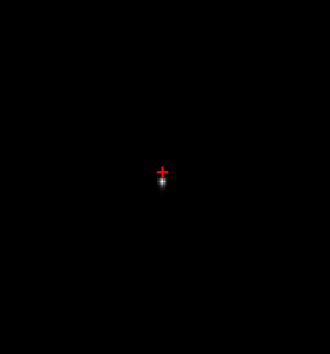
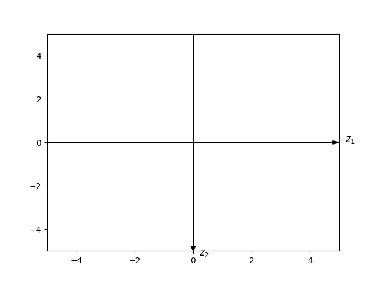
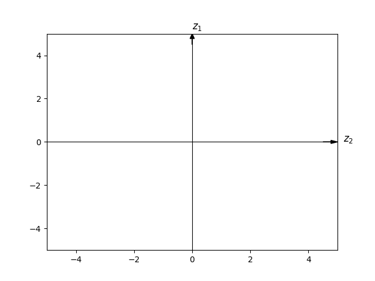

1. F数
F数= 镜头焦距 / 光圈直径
设聚焦时边缘光线与透镜平面夹角为θ，
则F# = tan(\theta)/2
2. 仿真点扩散函数焦平面坐标轴与采集图像坐标轴的对应关系
在瞳平面 (u,v)，光场可表示为所有方向平面波的连续叠加：
P(u,v)=∬−∞∞A(ku,kv)⋅ei(kuu+kvv)dkudkv
- ku,kv：波矢在 u,v 方向的分量，对应空间频率
- A(ku,kv)：角谱振幅，即各平面波分量的权重
透镜的物理作用：根据几何光学，薄透镜将入射平行光聚焦到其后焦面的一点，位置为：
xf=f⋅tanθu≈f⋅kku
yf=f⋅tanθv≈f⋅kkv
成像仿真中傅里叶频率坐标到焦平面空间坐标的变换过程分析了仿真像元与真实采集相机像元的关系，从而推导了仿真图像与采集图像之间的缩放关系。
要完全让仿真图像和采集图像对应，还需要确定公式
xf=f⋅tanθu≈f⋅kku
yf=f⋅tanθv≈f⋅kkv
中，ku,kv与xf,yf的坐标轴的关系。

生成仅含倾斜的点扩散
下图为分别当z1=0.3,z2=0.3时仿真点扩散函数的图象。

z1=0.3

z2=0.3
由图像结果可知，仿真图像的坐标轴可以表示为

仿真图像坐标轴
在光路系统中利用倾斜镜给波前添加z1和z2倾斜项，
通过观察添加倾斜项时点扩散相机中成像的位移情况，
可以得到光路采集图像上的坐标轴，两个相机分别为：

相机1

相机2
因此，将相机1和相机2的图像坐标轴与仿真图像坐标轴对齐
1
2
| np_PD1 = np.array(im_PD1).T[:, ::-1]
np_PD2 = np.array(im_PD2).T
|
3. 在真实光路实现点扩散和相位的对应关系
graph LR
Start[300mm] --> S1
subgraph S1[主缩束系统]
S1_s[缩束比: 5x]
end
S1 --> DM
subgraph DM[瞳面]
DM_s[变形镜
60mm]
end
DM --> S2
subgraph S2[二次缩束]
S2_s[缩束比: 5x]
end
S2 --> F[聚焦透镜]
F --> CCD[相机]
DM -.-> 瞳面后焦距
瞳面后焦距[瞳面后焦距: 6240.79/5=124.958mm] -.-> CCD
总焦距[总焦距: 6240.79mm] -.-> CCD
Start -.-> 总焦距
S2 --> S3
subgraph S3[WFS前缩束]
S3_s[缩束比: 4x]
end
S3 --> WFS[WFS
Φ3mm]
DM -.-> 瞳面到WFS
瞳面到WFS[瞳面到WFS缩束比20x] -.-> WFS
style 总焦距 fill:none,stroke:none,stroke-width:0px,color:#333,font-weight:bold
style 瞳面到WFS fill:none,stroke:none,stroke-width:0px,color:#333,font-weight:bold
style 瞳面后焦距 fill:none,stroke:none,stroke-width:0px,color:#333,font-weight:bold
style DM fill:#ffe1e1
在AO系统中为保证校正精度，需保证哈特曼与变形镜位置的共轭关系，即哈特曼探测相位与变形镜（光瞳）处相位具有完全相同的相位分布（仅比例缩放）。
由于从相位到点扩散函数的仿真过程中，
在光学仿真中，瞳函数（复振幅）与振幅点扩散函数（ATF）
是严格的傅里叶变换对，而PSF是ATF的模平方。
在真实光路中，理想薄透镜在后焦面实现了对透镜平面入射波前（复振幅）的傅里叶变换。
为保证仿真点扩散和实际采集到点扩散的一致性，
需要保证:
变形镜（光瞳）与聚焦透镜平面处于共轭关系，
即变形镜（光瞳）处相位与聚焦透镜处相位，具有完全相同的相位（仅比例缩放）。
聚焦透镜输入并生成点扩散的相位 = 变形镜（光瞳）处相位 = 哈特曼探测相位
3.1. 变形镜（光瞳）位置和哈特曼位置共轭
共轭的根本目的：确保哈特曼传感器探测的相位，与变形镜所处位置的相位具有完全相同的相位分布（仅比例缩放），共轭意味着点对点映射——DM上每一点的光线，唯一对应WFS靶面上的一个点，不会混叠。
验证方法：变形镜位置需要和哈特曼位置满足物像关系。在变形镜位置（瞳面）放置点光源，在哈特曼位置能呈现艾里斑，表明变形镜（瞳面）上的点和哈特曼位置的点是一一对应的关系，变形镜位置的点光源（球面波），在哈特曼位置处也是点光源（球面波）。
3.2. 变形镜（光瞳）位置和聚焦透镜位置共轭
共轭的根本目的：确保聚焦透镜输入并生成点扩散的相位=变形镜（光瞳）处相位=哈特曼探测相位，仅比例缩放，仿真过程和探测过程的对应关系。
验证方法：根据变形镜与哈特曼共轭关系的判断方法。变形镜也需要和聚焦透镜位置满足物像关系，在变形镜位置（瞳面）放置点光源，在聚焦透镜位置能出现艾里斑。
4. 成像仿真中傅里叶频率坐标到焦平面空间坐标的变换过程
焦平面上光场分布是瞳函数的傅里叶变换
Uf(xf,yf)=C⋅∬P(u,v)⋅e−iλf2π(xfu+yfv)dudv
4.1. FFT输出的频率间隔 Δf = 1/(N·Δu)
这是离散傅里叶变换的采样定理，定义了FFT输出域的坐标刻度。
对于长度为 L = N·Δu 的连续信号（光瞳直径），离散傅里叶变换的频率分辨率为周期函数的基本频率：
Δf=L1=N⋅Δu1
其中 L 是总采样长度（物理世界的实际范围，实际上就是光瞳直径），N 是采样点数，Δu 是采样间距。
采样范围越大，频率分辨率越精细，对低频分量的分辨能力越强。
低频信号需要更长的采样范围，才能更精确地测定其频率。
采样越密（采样频率大）越能测量到高频，采样越长（采样范围大）越能测量到低频
需要确定哈特曼子孔径的间距Δu，采集时点阵直径上的子孔径个数。
因为真实光路中透镜也是傅里叶变换（连续），也会受到L对频率分辨率的限制：
当两个频率分量的间隔 ∣f2 −f1∣<1/L 时，它们的艾里斑重叠，无法分辨。
对于一个平面波，其聚焦之后艾里斑的大小也受到
Δxf=Dλf=λf⋅Δf
的限制，不可能无穷小。
| 符号 |
物理意义 |
单位 |
示例值 |
| N |
光瞳矩阵单边像素数 |
pixels |
51 |
| Δu |
光瞳平面像素物理尺寸，
哈特曼的子孔径间距 |
米/像素 |
100e-6 m (100 µm) |
| Δf |
FFT后的频率采样间隔 |
周期/米 (cycles/m) |
待计算 |
| (i-N//2)·Δf |
FFT后，坐标i所对应的频率,
指该分量在光瞳平面上的空间频率，
表示单位长度内相位的周期性变化次数 |
周期/米 (cycles/m) |
待计算 |
物理意义：对FFT结果进行fftshift零频中心化后，频率范围被映射到[-1/(2Δu), 1/(2Δu))，分成N份，间隔为Δf。此时，索引(i, j)对应的复数值是光瞳函数中空间频率((i-N//2)·Δf, (j-N//2)·Δf)的复振幅分量，
其中 N//2 是向下取整的中心偏移量（对于51×51矩阵，N//2 = 25）。
一定要对傅里叶变换的结果进行0频中心化，负频率的物理意义：
| 空间频率 |
相位变化 |
波前倾斜 |
远场光点位置 |
| fₓ = 0 |
恒定 |
垂直 |
中心 (0,0) |
| fₓ > 0 |
线性增加（+） |
向右倾斜 |
右侧 (+X) |
| fₓ < 0 |
线性减少（-） |
向左倾斜 |
左侧 (-X) |
4.2. 焦平面空间坐标的物理映射
这是夫琅禾费衍射的坐标变换关系，将FFT的频率坐标转换为真实的焦平面空间坐标。
Uf(xf,yf)=C⋅∬P(u,v)⋅e−iλf2π(xfu+yfv)dudv
| 符号 |
物理意义 |
单位 |
示例值 |
| λ |
光波长 |
米 |
632.8e-9 m |
| f |
微透镜焦距 |
米 |
3.5e-3 m (3.5 mm) |
| fk |
FFT第k个采样点的物理频率 |
cycles/m |
k·Δf |
| xf |
焦平面物理坐标 |
米 |
待求 |
夫琅禾费衍射公式中的相位项为：
exp[−iλf2π(xfu+yfv)]
这揭示了焦平面坐标与光瞳频率的线性关系：
fk=λfxf⟹xf=λf⋅fk
4.2.1. 离散到连续的映射
FFT的第k个采样点对应物理频率 f_k = k·Δf，因此对应的焦平面位置为
（为了表示简单忽略了频率中心化）：
xf(k)=λf⋅(k⋅Δf)=λf⋅NΔuk
4.2.2. 推导焦平面像素尺寸Δxf
两个相邻FFT采样点（k → k+1）对应的焦平面坐标差为：
Δxf=xf(k+1)−xf(k)=λf⋅NΔuk+1−λf⋅NΔuk
消去k后得到最终的物理刻度公式：
Δxf=N⋅Δuλf=λf⋅Δf
哈特曼探测的物理直径 N·Δu 决定傅里叶变换的频率分辨率 Δf，决定光学成像分辨率Δxf；Δu 决定可分析的最大频率fmax，决定成像系统能处理多大像差 和 保留多少细节
（动态范围与空间带宽））；
采样点数 N 满足 N = 2·f_max/Δf，是数字化采样密度。
物理本质：FFT的离散采样由哈特曼的N·Δu决定，
而实测图像由CCD硬件规格决定，两者通常不匹配。
4.2.3. 实际像素尺寸验证
示例 > Δxf =(632.8e-9 × 3.5e-3) / (51 × 100e-6) = 4.34×10⁻⁷ m/pixel = 0.434 µm/pixel
而如果CCD探测器像素尺寸可能是 5 µm/pixel，因此：
缩放比例=5.00.434≈0.087
这意味着仿真图像比实测图像精细约11.5倍！必须通过插值降采样才能对比。
4.3. 总结
- 输入：光瞳矩阵
P，物理尺寸 N·Δu（如 51 × 100 µm = 5.1 mm）
- FFT：自动计算频率域，间隔
Δf = 196 cycles/m
- 衍射：夫琅禾费公式将频率映射为焦平面坐标，间隔
Δx_f = 0.434 µm
- 探测：你的CCD像素是
5 µm，仿真图像需要压缩11.5倍才能匹配
不匹配的根源：FFT的数学频率刻度 vs 物理世界的探测器硬件刻度。
5. 波的复数表示中相位的单位
E(r,t)=E0eiθ
5.1. 为什么必须是 rad？——欧拉公式的数学约束
任何复指数表达式 eiθ 必须满足：
eiθ=cosθ+isinθ
三角函数 cosθ 和 sinθ 的定义域是：θ 必须无量纲（即 rad）。
5.1.1. 证明：泰勒展开
cosθ=1−2!θ2+4!θ4−...
- 如果 θ 有单位（如米），则 θ2 单位是 m2，1 是无量纲
- 不同单位的量不能相加，级数无意义
结论：eiθ的θ必须无量纲
5.2. 物理上如何保证无量纲？
在平面波公式中：
ei(kuu+kvv)
各物理量的单位设计：
- u,v：空间坐标 [米]
- ku,kv：波矢分量 [弧度/米]
- 乘积：[kuu]=mrad⋅m=rad → 无量纲
5.3. 工程中的常见混淆
有时工程习惯用 cycles（波长） 作相位单位：
φcycles=2πφrad
但必须转换回 rad 才能代入公式：
ei2πφcycles
错误做法：eiφcycles（单位缺失 2π，结果错误）
eiθ 要求 θ 无量纲，物理上通过让 ku [rad/m] 与 u [m] 相乘得到 rad，满足数学定义。
6. 透镜与傅里叶变换（角谱法）
6.1. 瞳函数的角谱分解
在瞳平面 (u,v)，光场可表示为所有方向平面波的连续叠加：
P(u,v)=∬−∞∞A(ku,kv)⋅ei(kuu+kvv)dkudkv
- ku,kv：波矢在 u,v 方向的分量，对应空间频率
- A(ku,kv)：角谱振幅，即各平面波分量的权重
由傅里叶变换：
A(ku,kv)=(2π)21∬P(u,v)⋅e−i(kuu+kvv)dudv=F{P}(1)
物理意义：瞳函数本身就是其角谱的傅里叶反演，即瞳函数与角谱构成傅里叶变换对。
6.1.1. 为什么存在(2π)21
傅里叶变换对的三种定义:
| 定义类型 |
正向变换 |
逆向变换 |
应用领域 |
| 角频率型 (物理学) |
F(ω)=∫f(t)e−iωtdt |
f(t)=2π1∫F(ω)eiωtdω |
量子力学、波动光学 |
| 对称型 (数学) |
F(ω)=2π1∫f(t)e−iωtdt |
f(t)=2π1∫F(ω)eiωtdω |
纯数学理论 |
| 频率型 (工程学) |
F(ν)=∫f(t)e−i2πνtdt |
f(t)=∫F(ν)ei2πνtdν |
信号处理、通信 |
角谱理论使用角频率型，
在波动光学中，角波矢ku,kv
是天然变量，与空间坐标u,v构成共轭对。
因为独立变量有两个u,v，每个维度的变换贡献一个 2π 因子
6.2. 单平面波分量的聚焦
考虑一个平面波分量 ei(kuu+kvv)：
- 传播方向：方向余弦 cosθu=kku,cosθv=kkv，其中 k=2π/λ
- 入射透镜：该平面波是平行光束，与光轴夹角 θ≈θu2+θv2（傍轴近似）
这里 ku,Kv 的单位是rad/m，u,v的单位是m，相位的单位是rad/m。
透镜的物理作用：根据几何光学，薄透镜将入射平行光聚焦到其后焦面的一点，位置为：
xf=f⋅tanθu≈f⋅kku
yf=f⋅tanθv≈f⋅kkv
解得空间频率与焦平面坐标的关系：
ku=fkxf=λf2πxf
kv=fkyf=λf2πyf
关键结论：每个空间频率 (ku,kv) 唯一对应焦平面一个位置 (xf,yf)，映射是线性的。
6.3. 焦平面场的合成
所有平面波分量被透镜同时聚焦到焦平面各自对应的点。在点 (xf,yf) 处的总场Uf(xf,yf)，是 所有满足上述映射关系 的平面波分量的贡献之和。
A(ku,kv)=(2π)21∬P(u,v)⋅e−i(kuu+kvv)dudv=F{P}(1)
把映射关系代入角谱展开式：
由 ku=λf2πxf，微分关系为 dku=λf2πdxf（同理 dkv）。
将 (1) 式反演，并将积分变量从 (ku,kv) 换为 (xf,yf)：
Uf(xf,yf)∝A(λf2πxf,λf2πyf)
利用 (1) 式显式写出 A：
Uf(xf,yf)=C⋅∬P(u,v)⋅e−iλf2π(xfu+yfv)dudv
其中常数 C 包含 (2π)21⋅λf2π⋅λf2π=(λf)21 及相位因子，在强度测量中无关紧要。
| 要素 |
在公式中的体现 |
物理意义 |
| 多子波源 |
积分 ∫∫ 遍历瞳平面所有点 (u,v) |
每个点都是惠更斯子波源 |
| 相位差 |
复指数项 exp[−i(...)] |
不同 (u,v) 到 (xf,yf) 的光程差 |
| 相干叠加 |
积分求和 |
复振幅矢量相加 = 干涉 |
6.4. 得到傅里叶变换形式
最终表达式：
Uf(xf,yf)=C⋅F{P(u,v)}∣∣∣∣∣νx=λfxf,νy=λfyf
物理意义：焦平面复振幅是瞳函数的空间频谱，空间频率坐标由焦平面位置线性缩放。
6.5. 点扩散函数（PSF）
焦平面强度分布：
PSF(xf,yf)=∣Uf(xf,yf)∣2∝∣F{P(u,v)}∣2
6.6. 为什么能避开菲涅尔积分？
| 方法 |
核心思想 |
优点 |
| 菲涅尔法 |
两次球面波传播+透镜相位相消 |
直接展示相位抵消，但数学繁琐 |
| 角谱法 |
本征函数分解+空间频率映射 |
物理本质清晰，数学简洁严谨 |
角谱法的本质：将透镜视为空间频率分析仪：
- 输入：瞳函数 P(u,v) 的角谱分布 A(ku,kv)
- 透镜：将每个平面波分量按方向分离并聚焦
- 输出：焦平面场 Uf(xf,yf) 直接显示角谱，坐标与频率成比例
无需二次相位相消，因为平面波本征函数在自由空间的相位传播 eikzf 被自动包含在模式分离过程中，不显式出现。
6.7. 成像过程总结
- 分解：瞳平面场 = 不同角度平面波的叠加（不同角度的平面波对应着不同的空间频率）
- 聚焦：透镜将每个平面波定向到焦平面唯一位置
- 合成：所有平面波干涉形成焦斑，其分布 = 角谱的功率
7. 菲涅尔衍射
菲涅尔衍射（Fresnel Diffraction）
近场衍射，指光源和观察屏（或二者之一）与衍射孔径/障碍物距离有限远时的衍射现象。
关键区别：
- 菲涅尔衍射：距离有限，入射波和衍射波都是球面波（或柱面波），数学处理复杂
- 夫琅禾费衍射：距离无限远（平行光），入射波和衍射波都是平面波，数学处理简单（傅里叶变换）
判断标准用菲涅尔数：
F=Lλa2
其中 a 是孔径半径，L 是距离，λ 是波长。当 F≫1 时为菲涅尔衍射区。
菲涅尔在惠更斯原理基础上加入了干涉思想：
波前上的每一点都是次级球面子波源，空间某点的光场是所有子波相干叠加的结果。
数学表达（菲涅尔衍射积分）：
U(P)=iλzeikz∬_SU0(x′,y′)exp[2zik((x−x′)2+(y−y′)2)]dx′dy′
核心特点：相位因子是二次项，导致计算复杂。
| 特性 |
菲涅尔衍射 |
夫琅禾费衍射 |
| 距离 |
近场（有限远） |
远场（无限远） |
| 波面 |
球面/柱面波 |
平面波 |
| 数学 |
菲涅尔积分（复杂） |
傅里叶变换（简洁） |
| 条纹 |
条纹位置随距离变化 |
条纹位置固定（角分布） |
| 观察 |
直接观察即可 |
通常需要透镜聚焦 |
8. 哈特曼利用斜率测量相位的原理以及从Zernike系数到成像的仿真过程
8.1. 光波相位的数学表达与分解
光波是空间和时间的函数，光波在四维空间中的表达式为：
E(r,t)=E0ei(ϕ(r)−ωt)
其中
- ϕ(r)可以分解为ϕ(r)=k⋅r+ϕ0(r)，
这里忽略了常数部分
- k⋅r 是平面波基准项（理想传播相位），即相位的线性部分
- ϕ0(r) 是像差/畸变引入的附加相位
即
E(r,t)=E0ei(k⋅r+ϕ0(r)−ωt)
对于存在像差的实际波前，
ϕ0(r) 是r的
非线性畸变函数，常用Zernike多项式展开，像散、离焦等。
（一次或线性部分都可包含在k⋅r中）。
常数项（Piston）
- 数学：ϕpiston=C
- 物理：整个波前相位整体平移一个常数
- 成像影响：完全不影响
- 所有光线相位改变量相同
- 干涉/衍射图样不变
- 人眼/探测器无法感知绝对相位
一次项（Tip-tilt）
- 数学：ϕtilt=axx+ayy
- 物理：波前整体倾斜，光线方向偏转
- 成像影响：影响像的位置，但不影响像的质量
- 像整体平移：光斑质心位移 Δx=f⋅θ
- 分辨率不变：点扩散函数（PSF）形状不变
- 应用：精跟踪系统专门校正此项
二次及以上项（真正影响成像质量）
- 二次项：离焦、像散 → 模糊、离焦
- 三次项：彗差 → 不对称拖尾
- 四次项：球差 → 中心亮环
这些项会改变PSF形状，导致：
8.2. 光线方向与相位梯度的关系
E(r,t)=E0ei(ϕ(r)−ωt)
根据 程函方程（Eikonal Equation） ，光线传播方向由相位的空间梯度决定：
k(r)=∇ϕ(r)=(∂x∂ϕ,∂y∂ϕ,∂z∂ϕ)
物理意义：光线始终垂直于等相位面（波前）传播，且
∣∣k(r)∣∣2=2π/λ。（根据程函方程，均匀介质中，
相差只改变传播的方向，即波矢的方向随空间位置变化，但其模长恒定。
相差的本质是波矢的横向调制。）
光波的局部传播方向由相位梯度的方向决定。
因此可以通过测量波前斜率（即光线偏转角）来测量光的实际传播方向，从而反推相位梯度，
再利用积分重建算法恢复波前相位分布。这是哈特曼测量相位的基本原理。
8.3. 哈特曼传感器的测量过程
8.3.1. 利用光的实际传播方向（可测量）与光矢方向构建相位梯度（待求）的方程组
根据 程函方程（Eikonal Equation） ，光线传播方向由相位的空间梯度决定：
k(r)=∇ϕ(r)=(∂x∂ϕ,∂y∂ϕ,∂z∂ϕ)
在实际哈特曼探测器的每一个子孔径内，光的传播方向为:
S=(Δx,Δy,f)
其中Δx,Δy分别为哈特曼子孔径质心的偏移量，f为子孔径透镜的焦距。
k(r)和S都代表光的传播方向，
只是一个是从波矢的角度，一个是实际物理测量的结果。他俩方向一致，
只有模长的区别。
因此，归一化后,
(∂ϕ/∂z∂ϕ/∂x,∂ϕ/∂z∂ϕ/∂y,1)=(Δx/f,Δy/f,1)
由于波矢模长恒定∣∣k(r)∣∣2=2π/λ，
在近轴近似下，z方向分量∂ϕ/∂z占主导，
x和y方向的分量∂ϕ/∂x和∂ϕ/∂y可忽略，
则
∂ϕ/∂z=λ2π 为常数，因此：
∂ϕ/∂z∂ϕ/∂x=∂x∂ϕ⋅2πλ=fΔx
∂ϕ/∂z∂ϕ/∂y=∂y∂ϕ⋅2πλ=fΔy
∂x∂ϕ和∂y∂ϕ的
单位为弧度/米，表征波前相位角在x和y方向的空间变化率。
设
∂x∂Φ=∂x∂ϕ⋅2πλ
∂y∂Φ=∂y∂ϕ⋅2πλ
其中
∂Φ=∂ϕ⋅2πλ可以看成
相位从弧度单位到长度单位的转化，因此，
∂x∂Φ和
∂y∂Φ
的单位为长度/长度（无量纲），表征长度相位在x和y方向上的空间变化率，即长度相位的梯度。
（专业点说是：光程差。长度相位的说法并不专业，但是我理解起来好一些）。
∂x∂Φ=fΔx
∂y∂Φ=fΔy
因此，斜率fΔx和fΔy波前在x和y方向的局部倾斜，
表征长度相位在x和y方向上的空间变化率，即长度相位的梯度。
8.3.2. 斜率测量阶段，离散化计算fΔx和fΔy
对每个子孔径 (i,j)：
-
光斑质心定位：采用高阶矩算法
xˉi,j=∑m,nInmα∑m,nxnmInmα
计算精度达0.1像素，可计算对应波前测量精度RMS。
-
斜率计算：
fΔx=fxˉi,j−x0,i,j,fΔy=fyˉi,j−y0,i,j
其中 f 为微透镜焦距，(x0,i,j,y0,i,j) 为参考光斑位置，即理想的与z轴平行的平面波光斑位置。
8.3.3. 波前重建阶段，离散化表示 ∂x∂Φ和 ∂y∂Φ
利用 Hudgin离散模型 构建线性方程组：
∂x∂Φ=dΦi+1,j−Φi,j=fΔx
∂y∂Φ=dΦi,j+1−Φi,j=fΔy
其中d为子孔径间距，单位一般为μm。也正是由于∂x∂Φ=dΦi+1,j−Φi,j=fΔx和∂y∂Φ=dΦi,j+1−Φi,j=fΔy的单位为长度/长度（无量纲）。而d的单位为μm，因此，一般哈特曼测量出来的长度相位Φi,j的单位为μm，与波长λ无关。
8.3.4. 像差分析阶段：Zernike多项式分解
将重建的长度相位 Φ(x,y) 投影到Zernike多项式基底：
Φ(ρ,θ)=n=0∑Nm=−n∑nanmZnm(ρ,θ)
- 系数 anm：直接对应经典像差（如 a20 为离焦，a22 为像散，a11、a1,−1 为倾斜）
- 去除平移与倾斜：常数项（piston）和一次项（tip-tilt）不影响成像质量，可剥离
- 高阶像差校正：将Zernike系数反馈至变形镜（DM），驱动镜面形变实现波前补偿
8.3.5. 哈特曼测量原理的核心总结
从波矢到长度相位的完整转换链条：
- 物理测量：光斑位移 (Δx,Δy,f) 反映局部传播方向
- 斜率计算：fΔx=∂x∂Φ 建立测量与理论的桥梁
- 离散建模：Hudgin差分方程将连续梯度转化为线性方程组
- 数值求解：通过矩阵反演重建长度相位分布 Φ
- 像差提取：Zernike分解得到可校正的像差系数
8.4. Zernike系数到成像的仿真过程
8.4.1. 对于给定光学系统，离焦相机离焦量的表示方法
根据论文Phase-diversity wave-front sensor for imaging systems，
当离焦相机的离焦量用波长做单位时，
Δz=8aλ(f/#)2
其中：
- Δz：离焦相机的离焦距离，即最佳焦平面与离焦焦平面之间的物理位移量，单位为毫米（mm）或微米（μm）
- a：归一化Zernike离焦系数（无量纲），表示以波长λ为单位的离焦波前误差
- λ：光学系统的工作波长，单位为微米（μm）或纳米（nm）
- f/#：光学系统的f数（光圈数），定义为有效焦距与孔径直径之比，无量纲
对于确定的光学系统，物理离焦距离 Δz 与 f/# 均为固定值，因此根据公式可得
aλ=8(f/#)2Δz
绝对离焦量 aλ 是系统常量，不随波长变化，而a不是系统常量。
若程序设计中以aλ作为离焦量（错把a作为系统常量）会导致错误。a 设为固定值（如 a=0.5），则当光学系统工作波长改变时，aλ 会随之线性变化。这直接违背了上述物理规律（对于给定的光学系统aλ为常数），导致计算出的离焦波面与实际光学系统不匹配。
由于aλ才是系统常量，
正确的实现方式应固定 aλ 值，即以长度作为离焦量的单位。
当以长度作为离焦量的单位时，例如设置离焦相机离焦量为d=0.2μm。
对于给定光学系统，d是系统常量。当代码迁移到别的系统时，
只需确定新系统的离焦量d，无论波长如何变化，都不会出错。
8.4.2. Zernike系数到点扩散函数
哈特曼测量的相位为长度相位（光程差），
以65项Zernike系数为例，单位为μm，其中前两项为倾斜项（相位的线性部分，不影响成像质量）。
65项Zernike系数向量 a=[a1,a2,...,a65]（单位：μm），
根据Zernike多项式线性叠加原理，
在笛卡尔坐标 (x,y)下，
波面（波前）计算公式如下：
W(x,y)=i=3∑65ai⋅Zi(x,y)
跳转到透镜成像与傅里叶变换。
9. 振幅和强度
振幅指复振幅（Complex Amplitude），
它同时包含幅值和相位信息，
是描述光场完整状态的复数，无法直接测量；
强度（Intensity）是复振幅的模（幅值）的平方，
对应探测器实际响应的光功率密度，
因此可以测量。
| 术语 |
数学表达式 |
性质 |
物理意义 |
|
|
| 复振幅 (Complex Amplitude) |
E~=Aeiϕ |
复数 |
完整描述光场（幅值+相位） |
|
|
| 实振幅 (Amplitude) |
A=E~ |
实数 |
复振幅的模（幅值大小） |
|
|
| 强度 (Intensity) |
I=E~2=A2 |
实数 |
可测量的光功率密度 |
|
|
10. 光的传播方向与相位的关系
10.1. 三维平面波的数学形式
沿任意方向传播的平面波电场：
E(r,t)=E0ei(k⋅r−ωt)
其中：
- r=(x,y,z) 是位置矢量
- k=(kx,ky,kz) 是波矢（常矢量）
波矢的模长和光的波长有关，为2π/λ，是相位在空间上的变化快慢。
波矢方向垂直于等相位面（波前），波矢的方向就是光的传播方向。
10.1.1. 相位函数
空间相位部分为：
ϕ(r)=k⋅r=kxx+kyy+kzz
（时间部分 −ωt 对空间梯度无贡献）
10.1.2. 计算相位梯度
对 ϕ(r) 求梯度：
∇ϕ=(∂x∂,∂y∂,∂z∂)(kxx+kyy+kzz)
逐项求导：
∇ϕ=(kx,ky,kz)=k
结果一目了然：相位梯度 ∇φ 就是波矢 k 本身！
10.1.3. 等相面与传播方向
10.1.4. 具体数值例子
设波沿 (1,1,0) 方向传播，在真空中波长 λ=500nm：
- 波矢大小：k=2π/λ=1.26×107m−1
- 归一化方向：s^=21(1,1,0)
- 波矢分量：k=ks^=2k(1,1,0)
- 相位：ϕ=2k(x+y)
梯度计算：
∇ϕ=2k(1,1,0)=k
对于平面波，相位梯度 ∇φ 直接等于波矢 k，其方向完美决定了光的传播方向。
11. 光的干涉
光的干涉是指两列或多列相干光波叠加时，在叠加区域内光强呈现稳定的不均匀分布现象。
产生条件（相干条件）两列波必须满足：
频率相同（波长相同）
振动方向相同（偏振不垂直）
相位差恒定（相干性）
两列相干光波的总电场矢量形式）：
Etotal(r,t)=A1ei(k1⋅r−ω1t+ϕ1)+A2ei(k2⋅r−ω2t+ϕ2)
观测光强（时间平均）：
I(r)=⟨∣Etotal∣2⟩=2ϵ0c⟨Etotal⋅Etotal∗⟩
11.1. 干涉发生的理想情况（条件都满足）
条件：ω1=ω2=ω，A1∥A2，Δϕ=ϕ2−ϕ1=常数
干涉项：
Iint(r)=2A1A2cos[(k2−k1)⋅r+Δϕ]
结果：稳定的明暗条纹！能量在空间周期性再分配。
11.2. 条件不满足时：频率不同 ω1=ω2
代入：
Etotal=A1ei(k1⋅r−ω1t+ϕ1)+A2ei(k2⋅r−ω2t+ϕ2)
干涉项含时间：
Iint(r,t)∝2A1A2cos[(ω1−ω2)t+空间项]
时间平均（探测器响应时间远大于光周期）：
⟨cos[(ω1−ω2)t+…]⟩=0
结果：I(r)=I1+I2（均匀照明），条纹消失。
物理：相位差每秒旋转 ∣ω1−ω2∣ 次，条纹移动太快，眼睛/探测器看到的是时间平均。
11.3. 条件不满足时：偏振垂直 A1⊥A2
设：A1=x^A1，A2=y^A2
计算点积：
E1⋅E2∗=x^⋅y^⋅A1A2ei(…)=0
干涉项：
Iint∝2Re{E1⋅E2∗}=0
结果：I=I1+I2（均匀照明），无干涉。
物理：电场在正交方向振动，无法相互"调制"，就像上下跳和左右跳的人不会互相抵消。
11.4. 条件不满足时：相位差不恒定 Δϕ(t) 随机
设：ϕ2(t)=ϕ2+δϕ(t)，δϕ(t) 随机跳变
干涉项：
Iint(r,t)∝2A1A2cos[Δk⋅r+Δϕ+δϕ(t)]
统计平均（长时间观测）：
⟨cos[⋯+δϕ(t)]⟩=0
结果：I=I1+I2（均匀照明），条纹模糊消失。
物理：条纹位置每秒随机移动无数次，最终平均成均匀背景。这就是普通光源（如灯泡）不能产生干涉的原因——原子发光相位随机。
| 条件 |
公式中的体现 |
干涉消失原因 |
| 频率不同 |
e−iωt 项不同 |
时间平均归零 |
| 偏振垂直 |
A1⋅A2=0 |
干涉项恒为零 |
| 相位随机 |
ϕ(t) 随机 |
统计平均归零 |
干涉的本质：时间稳定、方向平行、频率相同的相位关系，使复振幅叠加产生可观测的强度调制。任一条件破坏，干涉项在物理观测中即消失。
12. 成像与光的干涉
从波动光学的本质来看，成像就是干涉的结果！
12.1. 两种光学视角
12.1.1. 几何光学视角（传统）
- 描述：光线追迹，透镜折射
- 观点：像是"光线直接投射"形成的，不涉及干涉
- 局限：无法解释分辨率极限、衍射现象
12.1.2. 波动光学/傅里叶光学视角（现代，更本质）
- 描述：光作为波传播
- 核心观点：物体→空间频率分解→传播→像面干涉重构
- 优势：能完整解释所有成像现象
12.2. 成像的波动光学本质：干涉重构
根据阿贝成像原理，物体（透射函数 O(x,y)）可分解为无数平面波：
O(x,y)=∬O~(kx,ky)ei(kxx+kyy)dkxdky
这些平面波经过透镜后，在像面发生干涉：
Iimage(x′,y′)=∣∣∣∣∣k∑O~(k)eik⋅r′∣∣∣∣∣2
结论：像面上的光强分布，是携带物体信息的所有平面波成分干涉叠加的结果。
12.3. 具体例子
12.3.1. 点光源成像（分辨率极限）
一个理想点光源发出的球面波，经透镜后在像面干涉形成艾里斑（Airy pattern）：
I(r)=I0[krNA2J1(krNA)]2
中心亮斑 + 同心圆环 = 典型的衍射+干涉图样。
物理：这是有限的孔径导致高频空间频率丢失（被截断），剩余成分干涉只能形成有限大小的斑，而非理想点。
12.3.2. 相位反差显微镜
- 样品：透明细胞（只改变相位，不改变强度）
- 直接成像：几乎看不见（强度均匀）
- 原理：在傅里叶面相位板使零频成分产生 π/2 相位延迟
- 结果：相位信息→强度变化，干涉使不可见相位变得可见
12.3.3. 全息成像
- 记录：物光波 + 参考光波 → 干涉条纹记录在底片
- 再现：参考光照射底片 → 衍射重构原物光波
- 本质：完全是干涉的记录与再现过程
12.4. 为什么日常感觉"不像干涉"？
- 非相干照明（灯泡）：不同点源之间相位随机，整体光强是强度叠加（非相干叠加）
- 相干照明（激光）：相位关系固定，复振幅叠加（干涉）
即使非相干照明，每个物点发出的光经系统后，自身衍射斑的形成仍是干涉，只是不同物点之间不相干。
12.5. 关键结论
| 成像类型 |
是否干涉 |
描述 |
| 相干成像（激光、显微镜） |
明确是 |
像面是各空间频率成分的干涉图样 |
| 非相干成像（日常） |
部分 |
各点自身衍射是干涉，点间是强度叠加 |
| 理想几何光学（无衍射） |
不是 |
数学极限，物理不存在 |
最终答案：成像本质上是波动的干涉与衍射过程。所有成像系统的分辨率极限、像差、调制传递函数(MTF)等，都源于空间频率的传递与干涉重构。
现代光学设计（如超分辨、超表面透镜）正是通过精确调控光的相位和干涉来实现。
13. 光的衍射
光的衍射是指光波遇到障碍物或通过有限孔径时，偏离直线传播并向几何阴影区扩展的现象。这是光的波动性的又一核心证据，本质上是波前受限后产生的无限子波干涉。
惠更斯-菲涅尔原理：
波前上的每一点都是次级子波源，发射球面子波，这些子波的相干叠加构成新的波前。
无障碍：子波叠加后保持平面波（向前传播）
有障碍：边缘处子波无抵消 → 向阴影区弯曲
| 特性 |
干涉 |
衍射 |
| 波源 |
有限个（几个到几十个）相干波 |
无限多个子波（波前连续分割） |
| 数学 |
离散求和 ∑n |
连续积分 ∫dS |
| 物理 |
波的叠加 |
波的叠加 |
| 条件 |
需要相干光源 |
任何波遇到障碍都发生 |
| 本质 |
有限波叠加 |
无限子波叠加 |
14. 时间频率和空间频率
沿任意方向传播的平面波电场：
E(r,t)=E0ei(k⋅r−ωt)
，其相位是时间和空间的函数，所以有时间频率和空间频率。
时间频率（光频）： 描述光波随时间振荡的快慢，对于单色光，时间频率是常数。
空间频率：相位在空间上的周期性变化；正是这种相位变化的快慢，在波叠加时通过干涉决定了最终图像光强的精细程度。
对不同空间频率的传递能力不同（光学传递函数OTF描述）。
| 维度 |
频率 |
描述什么变化快慢 |
例子 |
|
|
| 时间 |
ω |
时间上的振荡快慢 |
颜色（红橙黄绿） |
|
|
| 空间 |
波矢k |
空间上的振荡快慢 |
纹理粗细（粗纹/细纹） |
|
|
空间频率描述的是相位的空间变化，而不是光强的空间变化。
对于平面波：
E~(r)=E0eik⋅r
- 空间频率：k 或 ∣k∣
- 物理意义：相位 ϕ(r)=k⋅r 在空间变化的快慢
重要事实：对于单个平面波，其光强是均匀的：
I=∣E~∣2=∣E0∣2=常数
没有空间变化！
在图像形成时的情况。当多个不同空间频率的平面波叠加时：
E~total(r)=k∑Akeik⋅r
此时总光强：
I(r)=∣k∑Akeik⋅r∣2
由于交叉项（干涉），光强不再是均匀的，其空间变化模式反映了各相位空间频率成分的相对关系。
-
本质定义：
- 时间频率 ω：相位的时间变化率（−∂ϕ/∂t）
- 空间频率 k：相位的空间变化率（∇ϕ）
-
在成像中的表现：
- 高频的空间相位成分 → 干涉形成快速变化的光强细节（边缘、纹理）
- 低频的空间相位成分 → 干涉形成缓慢变化的光强轮廓
15. 相消干涉
15.1. 数学条件
两个平面波在位置 r 的复振幅：
- 波1：E~1=A1eiϕ1
- 波2：E~2=A2eiϕ2
叠加结果：
E~total=E~1+E~2
完全抵消的条件（理想情况）：
- 振幅相等：A1=A2=A
- 相位差为 π（即180°）：ϕ2=ϕ1+π
此时：
E~total=Aeiϕ1+Aei(ϕ1+π)=Aeiϕ1=0(1+eiπ)=0
15.2. 物理实例
- 驻波的波节：两列反向传播的等幅平面波形成驻波，在某些点（波节）振幅恒为零。
- 反反射涂层：设计薄膜厚度使上下表面反射光完全相消。
- 迈克尔逊干涉仪：调节光程差，可使某位置光强为零（暗纹）。
- 光学陷阱：两束激光干涉形成周期性零点，用于捕获冷原子。
15.3. 关键点
- 复振幅为0 → 光强 I=∣E~∣2=0（完全黑暗）
- 这是局域的：只在满足相位条件的空间点才发生
- 能量守恒：此处能量为0，必然在别处有相长干涉（能量加倍）
局域抵消不违背能量守恒，因为能量从暗区转移到了亮区，总能量不变。如果所有区域同时相消（全局为零），那才是违背能量守恒，但这种情况在物理上不可能发生。
局域性：干涉是强度在空间再分配，不是能量消灭
时间平均：瞬时能量密度可能局域为零，但时间平均总能量守恒
坡印亭矢量：相消区域能流为零，能量"绕道"流向相长区域
16. 瞳函数、点扩散函数和光学传递函数
16.1. 瞳函数（Pupil Function）（复数域，包含幅值和相位）
P(x)=w(x)exp[2πiϕ(x)]
- x：瞳面空间坐标
- w(x)：振幅（孔径内为1，孔径外为0）
- ϕ(x)：波前相位误差（孔径外振幅为0，相位无意义）
- P(x)：复振幅，无量纲
- w(x)：振幅传输函数，无量纲
- ϕ(x)：波前相位，无量纲，单位为波长数（waves）
相位项的物理意义：
- 在光学中，相位 = 2π×（光程差 / 波长）
- 当光程差 = 1个波长时，相位 = 2π 弧度，对应一个完整周期
因此，ϕ(x) 必须是无量纲的"波长数"，才能正确产生 2πiϕ(x) 的相位因子。
哈特曼探测器就是在测量瞳函数的相位梯度
| 测量对象 |
哈特曼探测器 |
| 瞳函数振幅 w(x) |
子孔径总光强（积分） |
| 瞳函数相位 ϕ(x) |
局部斜率（梯度）→ 积分重建，间接测量相位 |
16.1.1. 5. 论文依据：公式验证
让我们对照论文Phase-diversity wave-front sensor for imaging systems，验证每个公式的单位：
| 公式编号 |
表达式 |
ϕ(x)单位 |
验证 |
| (1) |
P(x)=w(x)e2πiϕ(x) |
无量纲 |
指数必须为无量纲，故ϕ(x)无量纲 |
| (3) |
h(ξ)=∥∫P(x)e−2πiξxdx∥2 |
- |
P(x)无量纲，积分结果无量纲 |
| (12) |
M4=Ao2+Ad2Ao2−Ad2 |
- |
所有量均为功率谱，无量纲 |
结论：整个算法链中，波前值必须是无量纲的波长数，否则指数项将具有物理错误的单位。
16.2. 点扩散函数（Point Spread Function, PSF）（实数域，强度）
h(ξ)=∣∣∣∣∫P(x)exp(−2πiξx)dx∣∣∣∣2
- ξ：像面空间坐标
- 公式含义：瞳函数的傅里叶变换取模平方
实际上，哈特曼探测器和在焦相机就是在光路里面实现了对瞳函数（变形镜 处）
和点扩散函数的测量，
成像透镜就是实现了瞳函数到点扩散函数之间的傅里叶变换。
16.3. 光学传递函数（Optical Transfer Function, OTF）(复数域)
H_o(f) = N_o \int P(x)P^{\*}(x-f) \, dx
-
f：空间频率
-
No：归一化常数
-
公式含义：瞳函数的自相关函数（其实就是点扩散函数的傅里叶变换，因为根据维纳-辛钦定理，点扩散函数是瞳函数傅里叶变换的模平方，对其再作傅里叶变换就等价于瞳函数的自相关运算）
-
模 ∣Ho(f)∣ → 调制传递函数（MTF）（实数，描述对比度衰减）
-
相位角 arg(Ho(f)) → 相位传递函数（PTF）（描述相位偏移）
16.3.1. 光学传递函数的物理意义
任何线性不变系统（光学系统是其一）满足：
正弦输入 → 同频正弦输出，仅幅度/相位改变
-
输入：一个正弦光栅（条纹强度按正弦规律变化）
数学形式：Iin(x)=I0[1+cos(2πξ0x)]
ξ0 就是其空间频率
-
系统响应：该光栅经过光学系统后
- 仍是同一频率的正弦条纹（线性系统保频特性）
- 但对比度下降（幅度衰减）
- 位置偏移（相位变化）
输出：
I_out(x)=I0[1+∣H(ξ0)∣cos(2πξ0x+argH(ξ0))]
- ∣H(ξ0)∣ ：该频率下的对比度衰减系数 → MTF
- argH(ξ0)：该频率下的相位偏移 → PTF
16.3.1.1. 点扩散函数的作用
-
PSF 是系统的脉冲响应：点光源 δ(x) 的成像结果
h(x)=系统{δ(x)}
-
卷积定理：任意输入 Iin(x) 的输出是
Iout(x)=Iin(x)∗h(x)
（∗ 表示卷积）
-
频域关系：对两边做傅里叶变换
F{Iout}=F{Iin}⋅F{h}
-
定义OTF：
H(ξ)=F{h(x)}
点扩散函数是系统在空域的脉冲响应，其傅里叶变换OTF就是系统在频域的频率响应函数，直接给出每个空间频率正弦条纹的对比度衰减和相位偏移量，因此完整表征了系统的传递能力。
16.4. 三者关系链
瞳函数 P(x)傅里叶变换场分布 F{P(x)}∣⋅∣2PSF h(ξ)傅里叶变换OTF Ho(f)